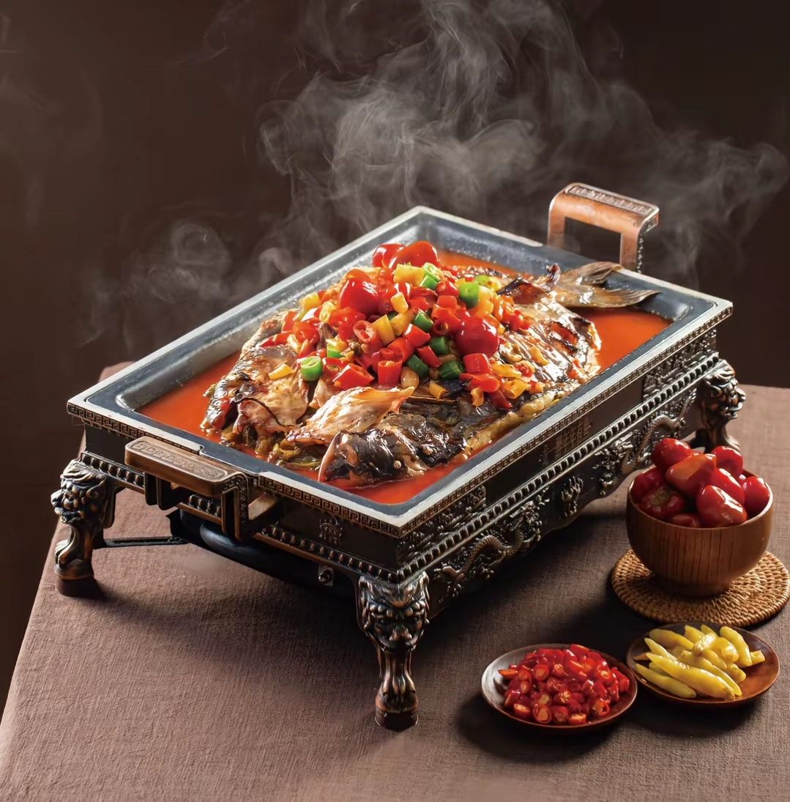

国家级非物质文化遗产 · 三峡美食代表 · 中国烤鱼之乡名片
万州烤鱼是重庆市万州区的传统名菜，属于渝派川菜，2019年被列入国家级非物质文化遗产名录。它采用“先烤后炖”的独特烹饪工艺，将鲜鱼烤至外焦里嫩，再放入特制烤盘，加入秘制调料和丰富配菜炖煮，使鱼肉充分吸收汤汁的麻辣鲜香，是万州最响亮的饮食名片。
万州烤鱼将腌、烤、炖三种烹饪方法有机结合，借鉴了传统渝菜和重庆火锅的特点，口味奇绝、营养丰富。鱼肉鲜嫩，配菜入味，麻辣鲜香四溢，令人回味无穷。如今，万州烤鱼已从地方小吃走向全国乃至世界，成为三峡美食文化的代表。
最经典的万州烤鱼风味，红油翻滚，花椒与辣椒完美融合，麻得痛快、辣得过瘾，是重口味爱好者的首选。
人气首选酸辣鲜香的泡椒与鱼肉完美结合，口感酸爽开胃，辣而不燥，适合喜欢酸辣风味的食客。
酸辣开胃豆豉的浓香与鱼肉的鲜美相互交融，咸鲜适口，酱香浓郁，是不嗜辣食客的绝佳选择。
酱香浓郁万州烤鱼的历史可追溯至南宋时期。《万州志》记载，南宋景炎二年（1277年），元军攻入万州，守将上官夔战死。当地百姓为躲避战乱，躲入深山，缺少炊具，便用炭火将鱼烤熟，再用山泉水加野菜炖煮，竟然格外鲜美。这种“先烤后炖”的烹饪方法从此在万州民间流传开来。
另一种更广为流传的说法与三国文化有关。相传蜀汉时期，诸葛亮在长江三峡地区屯兵时，士兵偶然将鱼烤焦了，舍不得扔掉，便加入水和辣椒继续煮，没想到味道极佳。此后这种做法在三峡地区流传，经过千年演变，形成了今天的万州烤鱼。
晚清时期，万州韩氏在长江边开设“韩记烤鱼铺”，将烤鱼技艺发扬光大。20世纪90年代，万州心连心广场逐渐形成了烤鱼一条街，成为万州烤鱼走向全国的起点。2018年，万州区被中国烹饪协会授予“中国烤鱼之乡”称号。
万州烤鱼的制作分为三大步骤：腌、烤、炖。首先选用2-3斤的鲜活鱼（草鱼、鲢鱼、江团为佳），去鳞去内脏后，在鱼身两侧划上刀口，用料酒、姜片、葱段、盐等腌制15-20分钟去腥入味。
腌制好的鱼用炭火或烤箱烤制，期间不断刷上香油和调料，烤至两面金黄、外焦里嫩。炭火的烟火气赋予了烤鱼独特的风味，这也是万州烤鱼的精髓所在。
烤好的鱼放入特制的铁质烤盘，浇上由辣椒、花椒、豆瓣酱、泡椒、蒜末等熬制的秘制红油汤汁，再铺上土豆片、藕片、豆皮、金针菇、洋葱等丰富配菜，放在小火上慢慢炖煮，让鱼肉和配菜充分吸收汤汁的精华。
万州最著名的烤鱼聚集地，整条街汇集了数十家老字号烤鱼店，是万州烤鱼走向全国的起点。夜晚灯火通明，烟火气十足，人均消费约60元。
万州区心连心广场
万州老字号烤鱼品牌，以传统炭火烤制闻名，鱼肉外焦里嫩，汤汁浓郁，配菜丰富，是本地人极力推荐的烤鱼名店。
万州区太白路附近
吃万州烤鱼讲究“先吃肉、后涮菜、最后下面”。烤鱼端上桌后，先夹一块外焦里嫩的鱼肉，在红油汤汁中涮一下，麻辣鲜香瞬间在口中绽放。鱼肉吃得差不多了，烤盘下的火继续炖着，配菜在汤汁中翻滚，土豆软糯、藕片脆爽、豆皮吸满汤汁，每一口都入味十足。
最地道的吃法是配上一碗白米饭，或者像重庆火锅那样涮一些青菜、面条，让浓郁的汤汁充分发挥最后的价值。万州人吃烤鱼，讲究的是热闹和氛围，三五好友围坐一桌，一锅烤鱼，几瓶啤酒，烟火气与人情味交织，这才是万州烤鱼的精髓所在。